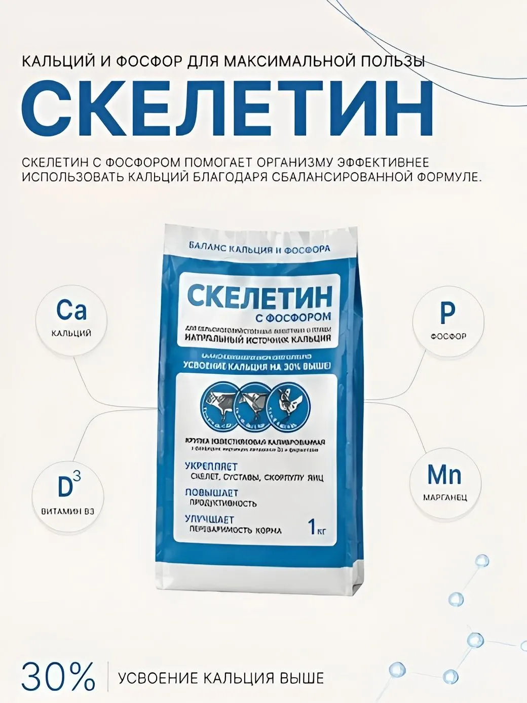

Скелетин для птиц, с фосфором или с серой: какой выбрать
Три добавки одной серии отличаются составом. Разбираем, что заявлено на каждой упаковке и чего там пока нет.
Коротко
- Все три — минеральные добавки на основе известняковой крупки. Различаются дополнительными компонентами.
- «Для птиц» — базовый вариант: кальций, марганец, витамин D3.
- «С фосфором» — единственный из трёх, где доли кальция и фосфора указаны цифрами, и единственный, где на этикетке есть не только птица.
- «С серой» — вариант с серой в составе.
- Долю кальция на двух из трёх упаковок производитель не указывает. Мы её запросили и до ответа не называем.
Что заявлено на упаковках
| Для птиц | С фосфором | С серой | |
|---|---|---|---|
| Основа | Известняковая крупка | Известняковая крупка | Известняковая крупка |
| Кальций | Заявлен, доля не указана | 24–35% | Заявлен, доля не указана |
| Фосфор | Не заявлен | 6,2% | Не заявлен |
| Сера | Не заявлена | Не заявлена | Заявлена, доля не указана |
| Марганец | Есть | Есть | Есть |
| Витамин D3 | Есть | Есть | Есть |
| Ферменты | Не заявлены | Есть | Есть |
| Для кого на этикетке | Птица всех видов и возрастов | Несушки, цыплята, бройлеры, свиньи, коровы | Несушки, сельскохозяйственная птица |
| Срок годности | 18 месяцев | 18 месяцев | На упаковке |
Пустые места в таблице — это не недостаток товара, а отсутствие данных у нас. Мы не переносим цифры с одной упаковки на другую и не берём их из посторонних источников.
Как выбирать
Если нужен кальций для несушек и ничего больше — подходит базовый вариант «для птиц». Его ставят в отдельную кормушку, птица берёт по потребности.
Если в хозяйстве не только птица — смотрите на вариант с фосфором: это единственная из трёх упаковок, где рядом с птицей указаны свиньи и коровы. Там же есть норма для животных: 3% от массы корма, то есть 30 г на 1 кг.
Если нужна сера — соответственно, вариант с серой. Сера входит в состав белков пера, поэтому про неё обычно вспоминают во время линьки. Подробнее — в статье о линьке у кур.
Зачем кальцию фосфор и витамин D3
Кальций в рационе работает не в одиночку. Витамин D3 нужен для всасывания кальция и фосфора — без него минералы усваиваются хуже. Фосфор же участвует в построении скелета вместе с кальцием.
Именно поэтому в составе всех трёх добавок заявлен витамин D3, а в варианте с фосфором фосфор вынесен отдельной строкой с конкретной долей.
Сравнивать добавки мы можем только по составу с этикетки. Пока производитель не укажет долю кальция в двух из трёх вариантов, сказать, где кальция больше, нельзя — и мы этого не говорим.
Когда обращаться к ветеринару
Если птица хромает, с трудом встаёт, несёт яйца без скорлупы при полноценном рационе или у стада резко упала кладка вне сезона — обратитесь к ветеринарному специалисту. Выбор минеральной добавки такие случаи не решает.
Частые вопросы
Можно ли давать два вида сразу?
Минеральные корма из отдельной кормушки птица регулирует сама, поэтому жёсткого запрета тут нет. Но смысла давать два похожих источника кальция одновременно обычно немного: выберите тот, чей состав вам нужен.
Какая доля кальция в Скелетине для птиц?
На упаковке она не указана. Мы запросили её у производителя и опубликуем, когда получим ответ. Своё число называть не будем.
Подойдёт ли голубям или кроликам?
На этикетках этих видов нет. Для них производитель применение не указывает, поэтому дозу мы подсказать не можем — обратитесь к ветеринарному специалисту.
Можно ли смешивать с основным кормом?
Вариант с фосфором для животных вводят в корм по норме 3%. Птице добавки этой серии дают из отдельной кормушки. Точный способ смотрите на вашей упаковке.
Что взять
 Скелетин для птиц, 1 кг
Кормовые добавки
Подробнее
Скелетин для птиц, 1 кг
Кормовые добавки
Подробнее

Скелетин с фосфором, 1 кг Кормовые добавки Подробнее Скелетин с серой, 1 кг
Кормовые добавки
Подробнее
Скелетин с серой, 1 кг
Кормовые добавки
Подробнее
Цены на сайте демонстрационные. Купить можно на Ozon — кнопка на странице товара.